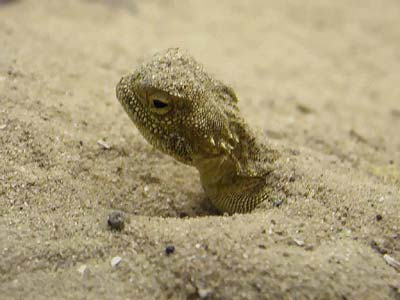

Песчаная круглоголовка

Ящерица только что вынырнула из песка. Она не только зарывается в песок с головой, но может быстро бежать под песком. Когда ящерица в глубине, видна только бегущая волна песка. Находясь полностью внутри песка она не ползёт, а именно бежит. В пустыне не видел, а в Ростовском зоопарке Круглоголовка это демонстрировала.

Круглоголовка вынырнула